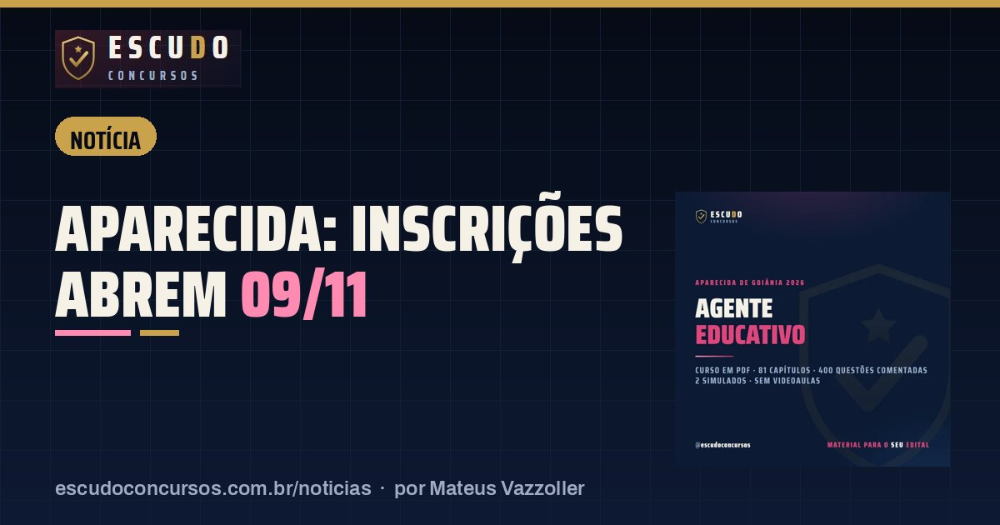

Concurso Educação de Aparecida de Goiânia: inscrições abrem 09/11 e a isenção da taxa vai só até 11/11
NotíciaPublicado em 9 de novembro de 2026 · por Mateus Vazzoller, ESCUDO Concursos

As inscrições do concurso da Secretaria Municipal de Educação de Aparecida de Goiânia abrem nesta segunda-feira, 09/11/2026, e vão até 09/12/2026, só pelo site do Instituto Verbena/UFG. No último dia, a inscrição e o boleto ficam disponíveis até as 17h (Brasília). O pedido de isenção da taxa tem prazo bem mais curto: 09/11 a 11/11/2026, segundo o Edital de Abertura nº 01/2026.
| Órgão | Prefeitura de Aparecida de Goiânia (Secretaria Municipal de Educação) |
|---|---|
| Banca | Instituto Verbena/UFG |
| Vagas imediatas | 2.956 no edital (1.663 de Agente Educativo e 1.056 de PE-I Pedagogia) |
| Inscrições | 09/11 a 09/12/2026, até as 17h do último dia (Brasília) |
| Isenção da taxa | 09/11 a 11/11/2026 |
| Taxa | R$ 130,00 (médio) e R$ 150,00 (superior) |
| Prova | 31/01/2027 (domingo) |
O prazo que vence primeiro é o da isenção
São só três dias para pedir a isenção. O edital, com base na Lei Federal nº 13.656/2018 e na Lei Municipal nº 3.427/2018, isenta da taxa três grupos:
| Quem pode pedir | O que comprova |
|---|---|
| Família no CadÚnico com renda por pessoa de até meio salário-mínimo | Número do NIS informado no pedido |
| Doador de sangue | Doação nos 6 meses anteriores ao edital, com comprovante do órgão de coleta |
| Doador de medula óssea | Doação nos 5 anos anteriores ao edital, com documento da unidade coletora e inscrição no REDOME |
Os comprovantes vão em PDF legível, de até 5 MB, na própria página do pedido. Doação de plaquetas não vale, e o simples cadastro no REDOME também não. Pedir isenção não faz a inscrição: depois do resultado é preciso concluir a inscrição no Portal do candidato. O resultado preliminar dos pedidos sai em 17/11 e o final em 25/11/2026. Quem tiver o pedido negado ainda pode gerar o boleto e pagar até 09/12.
Quanto custa e como pagar
A taxa é de R$ 130,00 para os cargos de nível médio, como o Agente Educativo, e de R$ 150,00 para os de nível superior, como o Professor PE-I Pedagogia. O pagamento é só por boleto, até 09/12/2026, e a confirmação do banco pode demorar alguns dias úteis. Como as provas dos dois cargos são em turnos diferentes, dá para disputar os dois pagando as duas taxas.
Para quem quer trabalhar nos CMEIs e nas escolas de Aparecida
O edital tem 2.956 vagas imediatas na rede municipal, e dois cargos ficam com 2.719 delas. O Agente Educativo (1.663 vagas, R$ 3.070,76, 30 horas) é quem está ao lado da criança no dia a dia do CMEI: na chegada, no lanche, no banho, no sono e nas brincadeiras. O Professor PE-I Pedagogia (1.056 vagas, R$ 4.508,28, 30 horas) assume a sala da Educação Infantil e dos anos iniciais. Requisitos, matérias e pesos de cada prova estão no guia do concurso. Quem vai para o PE-I tem um curso próprio: Professor PE-I Pedagogia.
Datas principais
| Etapa | Data |
|---|---|
| Pedido de isenção da taxa | 09/11 a 11/11/2026 |
| Resultado preliminar da isenção | 17/11/2026 |
| Resultado final da isenção | 25/11/2026 |
| Inscrições e emissão do boleto | 09/11 a 09/12/2026 (até 17h no último dia) |
| Último dia para pagar o boleto | 09/12/2026 |
| Local e horário da prova | 26/01/2027 |
| Provas objetiva e redação | 31/01/2027 (domingo) |
O edital chama essas datas de previstas: elas podem mudar por aviso do Instituto Verbena/UFG. Antes de pagar, confira a página do concurso na banca.
Curso ESCUDO Agente Educativo de Aparecida de Goiânia em PDF: 81 capítulos e 400 questões comentadas, 2 simulados no formato da prova, de acordo com o edital. De R$ 47 por R$ 37 com o cupom AGENTE37 até 09/12/2026.
Ver o curso
Perguntas frequentes
Quando abrem as inscrições do concurso da Educação de Aparecida de Goiânia?
Em 09/11/2026, pelo site do Instituto Verbena/UFG. O prazo vai até 09/12/2026, com inscrição e boleto até as 17h (Brasília) do último dia.
Até quando posso pedir isenção da taxa?
De 09/11 a 11/11/2026. Podem pedir famílias do CadÚnico com renda de até meio salário-mínimo por pessoa e doadores de sangue ou de medula óssea, com comprovante.
Posso fazer Agente Educativo e PE-I Pedagogia?
Sim. A prova do Agente é de manhã e a do PE-I é à tarde, no mesmo domingo, 31/01/2027. Cada inscrição tem a sua taxa.
Leia também
- NotíciaConcursos SEMUSA e SEMED Porto Velho: inscrições terminam 11/11 às 16h (horário de Rondônia)
9 de novembro de 2026 · Inscrições dos concursos da Saúde (SEMUSA) e da Educação (SEMED) de Porto Velho terminam em 11/11 às 16h de Rondônia. Boleto até 12/11, sem Pix. Veja os prazos.
- NotíciaPM-SP Soldado 2026: inscrições abrem 09/11 e o prazo da isenção é só até 11/11
8 de novembro de 2026 · Inscrições do concurso PM-SP Soldado 2026 abrem em 09/11 às 10h no site da VUNESP. Pedido de isenção ou redução da taxa só até 11/11. Veja prazos e regras.
Guia completo do concurso: edital, vagas e o que cai · Mais notícias e dicas de concursos